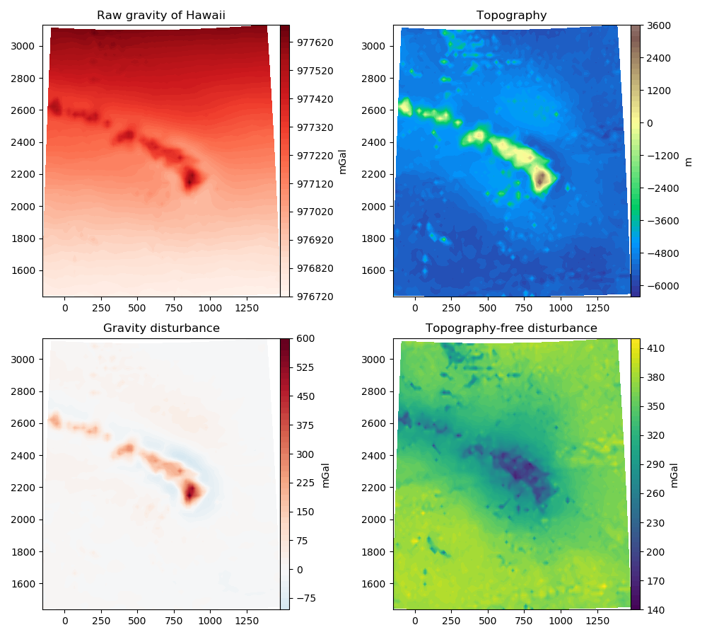

The fatiando.gravmag package has function for performing gravity
corrections to obtain the gravity disturbance (measured gravity minus normal
gravity). Particularly, there are functions for calculating normal gravity at
any height using a closed-form formula instead of using the free-air
approximation.
This example calculates the gravity disturbance and the topography-free disturbance (what is usually called the “Bouguer anomaly” in geophysics) using raw gravity data from Hawaii.
from fatiando.datasets import fetch_hawaii_gravity
from fatiando.gravmag import normal_gravity
import numpy as np
import matplotlib.pyplot as plt
# Load gravity data from Hawaii
data = fetch_hawaii_gravity()
# Use the closed form of the normal gravity to calculate
# it at the observation height. This is better than using
# the free-air approximation.
gamma = normal_gravity.gamma_closed_form(data['lat'], data['height'])
disturbance = data['gravity'] - gamma
# Use a Bouguer plate to remove the effect of topography
bouguer = disturbance - normal_gravity.bouguer_plate(data['topography'])
# Plot the data using the UTM coordinates (x is North and y is East)
shape = data['shape']
x, y = data['x'].reshape(shape), data['y'].reshape(shape)
fig, axes = plt.subplots(2, 2, figsize=(10, 9))
plt.rcParams['font.size'] = 10
ax = axes[0, 0]
ax.set_title('Raw gravity of Hawaii')
tmp = ax.contourf(y/1000, x/1000, data['gravity'].reshape(shape), 60,
cmap='Reds')
fig.colorbar(tmp, ax=ax, pad=0, aspect=30).set_label('mGal')
ax = axes[0, 1]
ax.set_title('Topography')
scale = np.abs([data['topography'].min(), data['topography'].max()]).max()
tmp = ax.contourf(y/1000, x/1000, data['topography'].reshape(shape), 60,
cmap='terrain', vmin=-scale, vmax=scale)
fig.colorbar(tmp, ax=ax, pad=0, aspect=30).set_label('m')
ax = axes[1, 0]
ax.set_title('Gravity disturbance')
scale = np.abs([disturbance.min(), disturbance.max()]).max()
tmp = ax.contourf(y/1000, x/1000, disturbance.reshape(shape), 60,
cmap='RdBu_r', vmin=-scale, vmax=scale)
fig.colorbar(tmp, ax=ax, pad=0, aspect=30).set_label('mGal')
ax = axes[1, 1]
ax.set_title('Topography-free disturbance')
tmp = ax.contourf(y/1000, x/1000, bouguer.reshape(shape), 60, cmap='viridis')
fig.colorbar(tmp, ax=ax, pad=0, aspect=30).set_label('mGal')
plt.tight_layout()
plt.show()
Total running time of the script: ( 0 minutes 0.849 seconds)